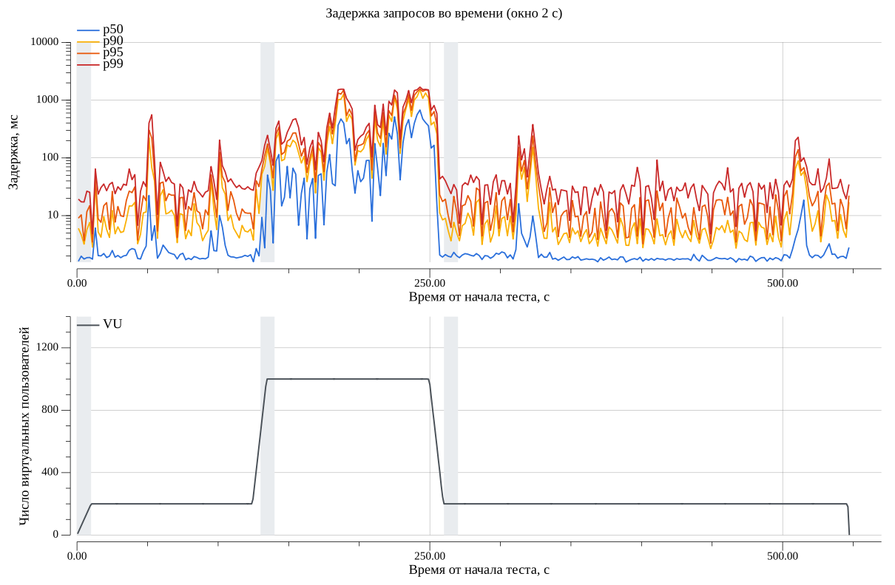
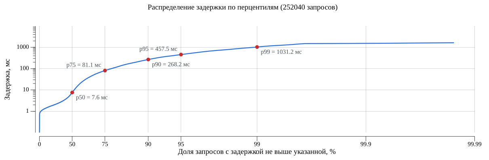
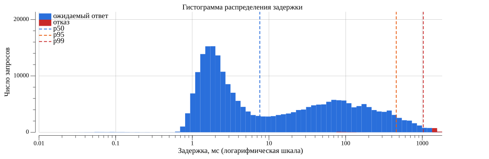
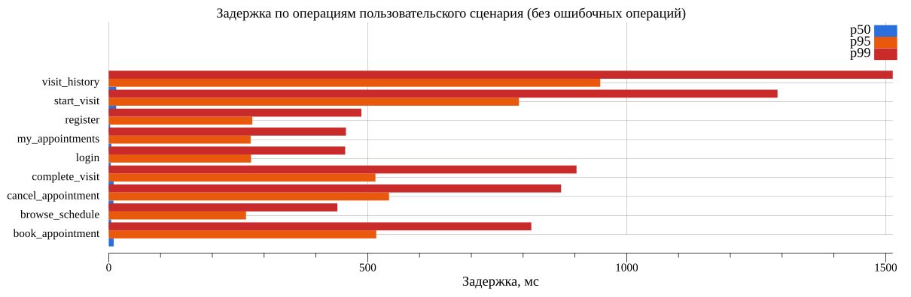
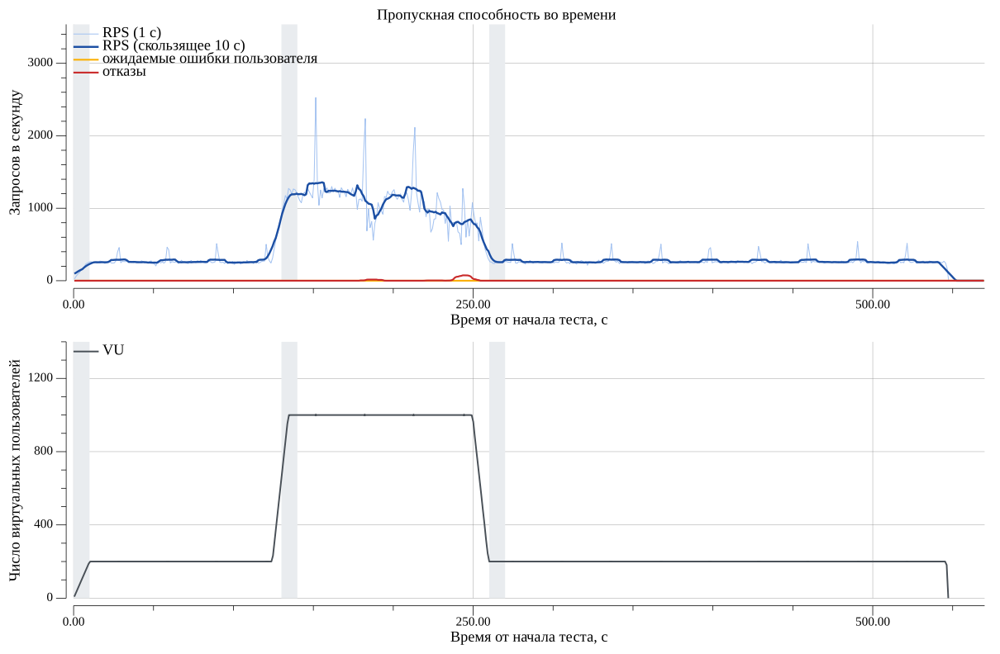
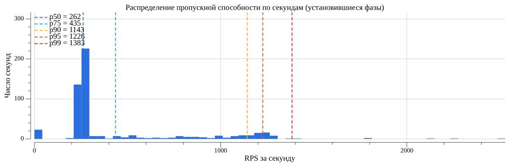
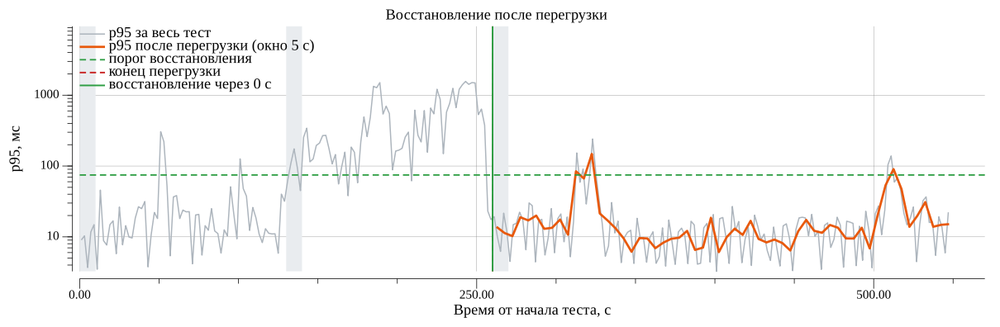
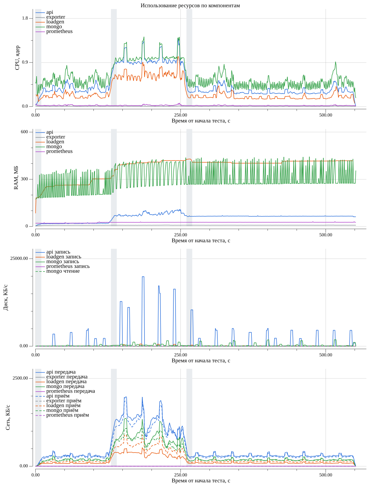

Перегрузка и восстановление
Запросов252040
RPS среднее / медиана442 / 261
p50 / p95 задержки7.60 / 457 мс
p99 задержки1031 мс
Отказы0.41%
Ошибочные операции0.00%
Базовая нагрузка: p95 24.7 мс, 302 RPS. Перегрузка: p95 689 мс, отказы 0.8%, 1066 RPS. Восстановление после снятия перегрузки за 0.00 с.
Задержка
| Задержка, мс | count | min | mean | p50 | p75 | p90 | p95 | p99 | max |
|---|---|---|---|---|---|---|---|---|---|
| Все запросы | 252040 | -1424 | 90.0 | 7.60 | 81.1 | 268 | 457 | 1031 | 1797 |
| Корректные операции | 252040 | -1424 | 90.0 | 7.60 | 81.1 | 268 | 457 | 1031 | 1797 |
| Ошибочные операции | 0 | — | — | — | — | — | — | — | — |



Операции пользовательского сценария
| Операция | count | min | mean | p50 | p75 | p90 | p95 | p99 | max | Отказы | Ошибочные |
|---|---|---|---|---|---|---|---|---|---|---|---|
| book_appointment | 36603 | 0.03 | 95.4 | 9.60 | 97.1 | 330 | 517 | 816 | 1391 | 0.00% | 0.00% |
| browse_schedule | 36700 | 0.04 | 49.6 | 4.74 | 52.5 | 161 | 265 | 442 | 797 | 0.00% | 0.00% |
| cancel_appointment | 11026 | 0.04 | 98.2 | 9.13 | 96.3 | 335 | 541 | 873 | 1370 | 0.00% | 0.00% |
| complete_visit | 25181 | -1415 | 95.1 | 9.54 | 93.6 | 318 | 515 | 903 | 1464 | 0.00% | 0.00% |
| login | 36721 | -1424 | 49.7 | 3.99 | 49.4 | 164 | 275 | 456 | 859 | 0.00% | 0.00% |
| my_appointments | 36513 | 0.03 | 51.7 | 5.10 | 55.7 | 167 | 274 | 458 | 891 | 0.00% | 0.00% |
| register | 7766 | -1364 | 50.2 | 2.84 | 46.5 | 164 | 277 | 488 | 795 | 0.00% | 0.00% |
| start_visit | 25357 | 0.04 | 145 | 14.4 | 146 | 507 | 792 | 1291 | 1715 | 0.33% | 0.00% |
| visit_history | 36173 | -1020 | 169 | 14.5 | 174 | 530 | 949 | 1514 | 1797 | 2.65% | 0.00% |

Пропускная способность
| Показатель | count | min | mean | p50 | p75 | p90 | p95 | p99 | max |
|---|---|---|---|---|---|---|---|---|---|
| RPS за секунду | 570 | 0.00 | 442 | 261 | 458 | 1159 | 1232 | 1373 | 2527 |


Фазы нагрузки
| Участок | VU | RPS ср. | RPS p50 | RPS p5 | p50 мс | p95 мс | p99 мс | Отказы | CPU api | CPU mongo | RAM api, МБ | SLO |
|---|---|---|---|---|---|---|---|---|---|---|---|---|
| разгон | 200 | 149 | 154 | 39.8 | 1.85 | 11.0 | 25.1 | 0.00% | 0.14 | 0.39 | 11.4 | да |
| базовая нагрузка | 200 | 285 | 258 | 237 | 2.17 | 26.8 | 65.2 | 0.00% | 0.36 | 0.54 | 19.4 | да |
| рост | 1000 | 1181 | 1209 | 1014 | 12.0 | 114 | 182 | 0.00% | 0.81 | 0.87 | 60.2 | да |
| перегрузка | 1000 | 1066 | 1118 | 550 | 74.8 | 689 | 1320 | 0.81% | 0.95 | 1.02 | 80.2 | нет |
| спад | 200 | 255 | 256 | 238 | 2.04 | 13.0 | 31.7 | 0.00% | 0.31 | 0.47 | 64.2 | да |
| восстановление | 200 | 247 | 256 | 0.00 | 1.93 | 20.7 | 56.1 | 0.00% | 0.31 | 0.49 | 65.0 | да |
Перегрузка и восстановление
| Участок | VU | RPS ср. | RPS p50 | RPS p5 | p50 мс | p95 мс | p99 мс | Отказы | CPU api | CPU mongo | RAM api, МБ | SLO |
|---|---|---|---|---|---|---|---|---|---|---|---|---|
| эталон | 200 | 302 | 260 | 236 | 2.07 | 24.7 | 53.0 | 0.00% | 0.35 | 0.52 | 20.6 | да |
| перегрузка | 1000 | 1066 | 1118 | 550 | 74.8 | 689 | 1320 | 0.81% | 0.95 | 1.02 | 80.2 | нет |
| после | 200 | 203 | 252 | 0.00 | 2.04 | 27.2 | 63.5 | 0.00% | 0.31 | 0.49 | 64.9 | да |

Использование ресурсов
| Компонент | Метрика | min | max | mean | median | p95 |
|---|---|---|---|---|---|---|
| api | CPU, ядер | 0.02 | 1.38 | 0.47 | 0.32 | 0.95 |
| api | Троттлинг CPU, с/с | 0.00 | 0.41 | 0.03 | 0.00 | 0.18 |
| api | Чтение с диска, КБ/с | 0.00 | 0.00 | 0.00 | 0.00 | 0.00 |
| api | Запись на диск, КБ/с | 0.00 | 19895 | 1077 | 0.00 | 5075 |
| api | RAM (working set), МБ | 4.44 | 108 | 57.3 | 64.9 | 90.3 |
| api | Сеть, приём КБ/с | 0.24 | 1866 | 477 | 276 | 1325 |
| api | Сеть, передача КБ/с | 0.17 | 1982 | 525 | 300 | 1438 |
| api | Процессы и потоки | 9.00 | 16.0 | 9.88 | 10.0 | 10.0 |
| exporter | CPU, ядер | 0.00 | 0.01 | 0.01 | 0.00 | 0.01 |
| exporter | Троттлинг CPU, с/с | 0.00 | 0.00 | 0.00 | 0.00 | 0.00 |
| exporter | Чтение с диска, КБ/с | 0.00 | 0.00 | 0.00 | 0.00 | 0.00 |
| exporter | Запись на диск, КБ/с | 0.00 | 0.00 | 0.00 | 0.00 | 0.00 |
| exporter | RAM (working set), МБ | 3.05 | 8.26 | 7.51 | 7.65 | 7.86 |
| exporter | Сеть, приём КБ/с | 0.48 | 0.69 | 0.50 | 0.48 | 0.67 |
| exporter | Сеть, передача КБ/с | 3.51 | 5.71 | 4.23 | 4.05 | 5.61 |
| exporter | Процессы и потоки | 5.00 | 8.00 | 7.39 | 8.00 | 8.00 |
| loadgen | CPU, ядер | 0.06 | 1.02 | 0.31 | 0.21 | 0.70 |
| loadgen | Троттлинг CPU, с/с | 0.00 | 0.00 | 0.00 | 0.00 | 0.00 |
| loadgen | Чтение с диска, КБ/с | 0.00 | 0.00 | 0.00 | 0.00 | 0.00 |
| loadgen | Запись на диск, КБ/с | 0.00 | 647 | 31.3 | 0.00 | 141 |
| loadgen | RAM (working set), МБ | 181 | 429 | 374 | 405 | 419 |
| loadgen | Сеть, приём КБ/с | 2.31 | 899 | 230 | 131 | 639 |
| loadgen | Сеть, передача КБ/с | 2.08 | 530 | 150 | 87.3 | 392 |
| loadgen | Процессы и потоки | 7.00 | 9.00 | 8.71 | 9.00 | 9.00 |
| mongo | CPU, ядер | 0.17 | 1.42 | 0.62 | 0.53 | 1.01 |
| mongo | Троттлинг CPU, с/с | 0.01 | 1.21 | 0.27 | 0.13 | 0.88 |
| mongo | Чтение с диска, КБ/с | 0.00 | 60.0 | 0.45 | 0.00 | 0.00 |
| mongo | Запись на диск, КБ/с | 24.0 | 1867 | 262 | 104 | 1185 |
| mongo | RAM (working set), МБ | 173 | 443 | 303 | 273 | 425 |
| mongo | Сеть, приём КБ/с | 0.17 | 1082 | 296 | 170 | 794 |
| mongo | Сеть, передача КБ/с | 0.24 | 1365 | 328 | 190 | 945 |
| mongo | Процессы и потоки | 39.0 | 153 | 122 | 132 | 148 |
| prometheus | CPU, ядер | 0.01 | 0.07 | 0.02 | 0.02 | 0.03 |
| prometheus | Троттлинг CPU, с/с | 0.00 | 0.00 | 0.00 | 0.00 | 0.00 |
| prometheus | Чтение с диска, КБ/с | 0.00 | 0.00 | 0.00 | 0.00 | 0.00 |
| prometheus | Запись на диск, КБ/с | 0.00 | 6.00 | 0.63 | 0.00 | 4.50 |
| prometheus | RAM (working set), МБ | 20.1 | 30.4 | 25.3 | 26.2 | 26.7 |
| prometheus | Сеть, приём КБ/с | 3.51 | 5.71 | 4.23 | 4.05 | 5.63 |
| prometheus | Сеть, передача КБ/с | 0.48 | 0.72 | 0.51 | 0.48 | 0.67 |
| prometheus | Процессы и потоки | 8.00 | 14.0 | 8.08 | 8.00 | 8.00 |

Коды ответов
| Код | Запросов |
|---|---|
| 200 | 181357 |
| 201 | 69642 |
| 500 | 1041 |
Окружение прогона
| Компонент | Логические CPU | Квота CPU | Резерв RAM, МБ | Лимит RAM, МБ | Образ | ID образа |
|---|---|---|---|---|---|---|
| api | 0,1 | 1 | 512 | 512 | vitaline-lab6-api:20261124-231457-stress-rlgw | 34bab9a88d5d |
| exporter | 6,7 | — | 64 | 64 | vitaline-lab4-exporter:1 | 5d8e679d55a3 |
| loadgen | 4,5 | — | 2048 | 2048 | grafana/k6:1.3.0 | 3ddc8b1a33a2 |
| mongo | 2,3 | 1 | 1024 | 1024 | mongo:7 | 41e8195b2791 |
| prometheus | 6,7 | — | 768 | 768 | prom/prometheus:v3.5.0 | 63805ebb8d2b |